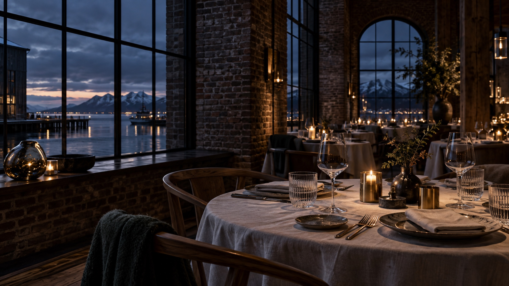
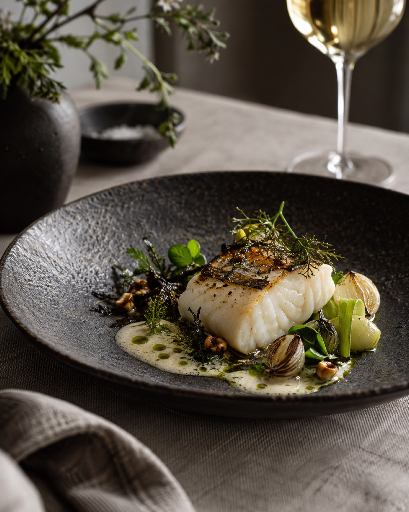
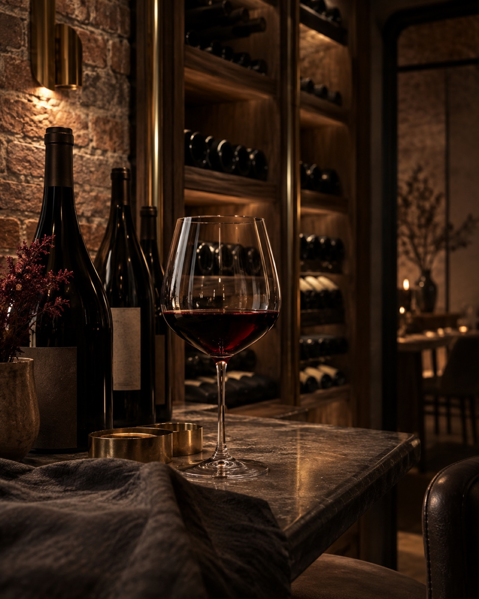

Italienskt hantverk · Höga Kusten
En kväll vid
inre hamnen
Generös italiensk mat, noggrant utvalda råvaror och tid att stanna kvar.
Varvskajen 1 · Örnsköldsvik
Saltmagasinet
Vid kajen
Italien, tolkat
i norr.
På Saltmagasinet möts italiensk matglädje och Örnsköldsviks hamn. Här lagas bröd och färsk pasta med omsorg, och menyn följer råvarorna snarare än kalendern.
Kom för lunch, samla familjen till middag eller låt kvällen börja med ett glas vid vattnet. Serveringen är varm, tempot behagligt och smakerna tydliga.

Köket
Råvaran
först.
Färsk pasta, fisk, kött och säsongens grönsaker får tala med italiensk självklarhet. Rätterna är precisa utan att bli tillkrånglade – gjorda för att delas, upptäckas och minnas.
Se vår menyVår filosofi
“Det enkla blir exceptionellt när råvaran, hantverket och stunden får samma omsorg.”
I glaset
Valt för
bordet.
Viner med ursprung och personlighet, utvalda för att möta kökets smaker. Fråga gärna oss om ett glas till rätten eller en flaska att följa genom kvällen.

Välkommen
Vi ses
vid kajen.
Öppettider
- Tis–tors
- 11–14 · 16–20
- Fredag
- 11–14 · 16–21
- Lördag
- 16–21
- Söndag
- 16–20
- Måndag
- Stängt